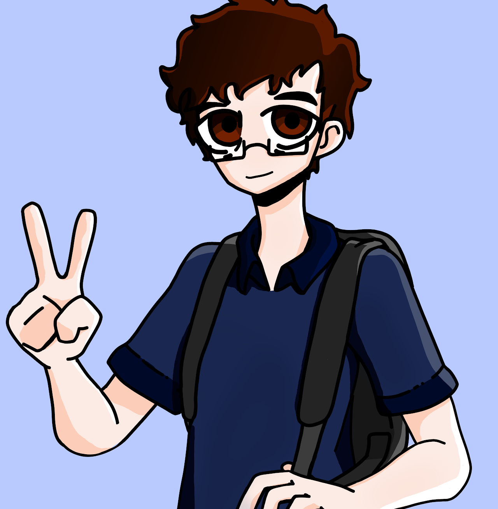

Gabriel Aires
Olá, meu nome é Gabriel Aires, sou natural de Palmas, no estado do Tocantins. Atualmente, estou cursando Engenharia de Software no Centro Universitário Católica do Tocantins.
01 · Trajetória Acadêmica
Instituições e experiências que me formaram
Ao longo da minha trajetória acadêmica, também tive a oportunidade de estudar em outras instituições, como o CEULP/ULBRA, no Tocantins, e a Universidade Paulista, no estado de São Paulo. Entre essas experiências, a instituição em que estou atualmente tem atendido melhor às minhas expectativas, tanto pela estrutura quanto pela relação com a área que escolhi seguir e seu time de professores.
02 · Transição de Carreira
Da curiosidade à escolha profissional
No momento, estou em processo de transição de carreira para a área de tecnologia e programação. Sempre tive interesse por tecnologia, mas foi durante a pandemia que percebi o quanto me identifico com temas relacionados à programação, desenvolvimento de sistemas e funcionamento dos computadores. Tanto que este portfólio está sendo desenvolvido e editado por mim.
Essa identificação foi um dos principais motivos que me levaram a ingressar no curso de Engenharia de Software. Desde então, venho buscando desenvolver meus conhecimentos na área, aprimorando minhas habilidades técnicas e construindo uma base sólida para atuar profissionalmente no setor de tecnologia.
03 · Hobbies
O que faço no tempo livre
Além da vida acadêmica e profissional, tenho como hobbys principais jogar videogame, ler assistir filmes e animes. Também gosto de realizar alguns projetos musicais e criar/desenvolver jogos simples durante meu tempo livre.